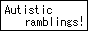

sosumi.xyz
⟳Want to compliment me on my awesome site? Shill Linux? Call me a poser because I've never actually used a classic Mac before? Then why not...
It'd mean a lot to me!
This site has a button!
If you enjoy what I post here, why not link back to it? I'd really appreciate it!

Welcome to sosumi.xyz!
Welcome to sosumi.xyz! I'm the titular sosumi, but I also go by sumi and sometimes Kuro, any of those are fine lol.
This place is my profoundly self-indulgent strange little corner of the worldwide web. Part business card, part journal, all queer. Really, I think the best way to describe it is a "digital scrapbook," in a way. All the odds and ends, the half finished projects, the just-for-fun doodles, the weird and somewhat concerning stuff that I felt the need to share with the world. Delightfully human, isn't it?
And what better place to put that sort of stuff than right here on nekoweb? I always felt like I was missing out on at lest some of the fun by always using other more traditional hosts.
So please, make yourself at home, don't mind the mess, and enjoy your stay.
It's like microblogging but harder and jankier!
This subsection is where I showcase cool things I'd like to share, but I was too lazy to for one reason or another I couldn't write a full blog article on. So please, if you have the time, check out...
Ballsack TV
Hands down my favorite web radio ever. Died briefly in 2024 but came back as a fan run project in a really neat format similar to MTV where you can watch the music videos along with the songs!!
Hazel
Hazel is THE best video essayist on YouTube right now hands down. She covers some really interesting stuff, and her videos are insanely well written and paced.
FNWeeaboo
One of the best rhythm game channels on YouTube, and DEFINITELY the most overlooked one.
His dead rhythm games series is top notch content.
7nonsense
A stylish website featuring cool photos taken on old and unusual hardware.